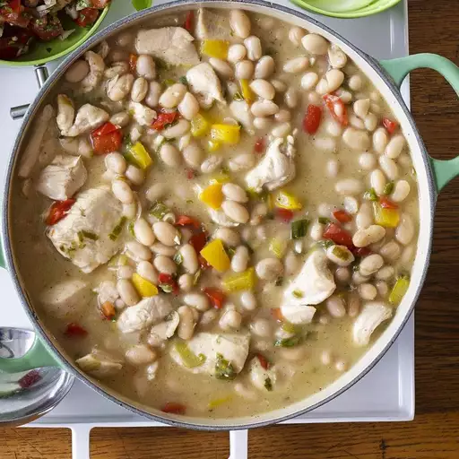

White Chicken Chili

Description
This recipe can be made in a slow cooker, or on the stove top. White corn chips and shredded Jack cheese complete the meal. This is a nice low fat meal.
- 1 ½ pounds skinless, boneless chicken breast halves - cubed
- 1 bunch green onions, thinly sliced
- 1 red bell pepper, chopped
- 1 yellow bell pepper, chopped
- 4 fresh jalapeno peppers, seeded and minced
- 1 clove garlic, minced
- ½ teaspoon ground ginger
- ½ teaspoon salt
- ½ teaspoon dried sage
- ½ teaspoon ground cumin
- ½ teaspoon ground white pepper
- 1 tablespoon olive oil
- 3 tablespoons butter
- ¼ cup all-purpose flour
- 2 cups chicken broth
- 2 (14 ounce) cans great Northern beans, undrained
Directions
- In a large skillet, heat olive oil over medium heat. Add chicken, and saute until cooked through. Remove the chicken from the pan.
- Saute the onion, red bell pepper, yellow bell pepper, jalapeno chile peppers and garlic in the same skillet. Return the chicken, along with the ginger, salt, sage, cumin and white pepper. Mix thoroughly.
- In a separate small saucepan or skillet, melt butter or margarine over medium heat. Stir in flour to make a roux. Whisk in the chicken broth and mix all together. Stir this mixture into the sauteed chicken and vegetables.
- Stir in the beans with can liquid, and simmer all over low heat for 15 to 20 minutes or until cooked and heated through.